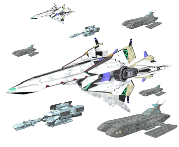

THE BLADE
OF THE
REPUBLIC
コーネリア連合共和国の誇る第1宇宙艦隊とその駐屯宙域。カタリナ防衛網と連携し星系中央部の守りを固めてきたが、帝国軍の奇襲により壊滅の危機に瀕している。
| DESIGNATION | CDF第1宇宙艦隊「スターブレード」 |
| DOMAIN | 軍事セクター（駐屯宙域） |
| LOCATION | Sectorζ — セクターγ隣接 |
| CLASS | 統合機動艦隊 |
| FLAGSHIP | 旗艦〈コーディリア〉 |
| OPERATOR | コーネリア防衛軍（CDF） |
| STRENGTH | 定数380隻 → 稼働約4割 |
| MISSION | 星系中央防衛 / GW支援 |
| FACTION | コーネリア連合共和国 |
| STATUS | ⚠ CRITICAL — 再編中 |

全軍 敵の襲撃に備えよ 繰り返す 敵の襲撃に備えよ！-スターブレード旗艦 コーディリア艦長の通信より抜粋-
OVERVIEW ─ 概要
「艦隊は国境である。動く国境だ。それが引けば、国土も引く」― CDF戦略教本 艦隊運用の章より
スターブレード（Starblade）は、コーネリア連合共和国の主力を担うコーネリア防衛軍第1宇宙艦隊の名称であり、同時にその駐屯宙域セクターζを指す通称でもある。「共和国の刃」の名を持つこの艦隊は、建軍以来星系中央部の守りの要であり続けてきた。
駐屯宙域はセクターγと隣接し、カタリナの軍事基地と相互に守りを固める配置となっている。しかし帝国軍の大規模な奇襲作戦により艦隊は甚大な損害を受け、現在壊滅の危機に瀕している。
⚠ 艦隊再編中 — 稼働率4割
GEOGRAPHY ─ 地理・環境
セクターζに天体は存在しない。あるのは整然と並ぶ泊地ブイ、補給プラットフォーム、乾ドック、そして艦列である。天体なき宙域が「場所」として星図に太字で記されるのは、そこに艦隊がいるからに他ならない。軍関係者はこの宙域を「動く要塞都市」と呼ぶ。
泊地の配置はグレートウォールの「内側」を守る最終予備として設計されており、壁を抜けた敵をカタリナ駐留軍と挟撃できる位置関係にある。補給はコーネリアとプロスペローからの定期輸送船団に依存しており、この補給線自体もまた防衛対象である。
HISTORY ─ 歴史
その原型は、共和国よりも古い。宇宙歴3767年、暴走するグランベルの超兵器を討つため、二百年以上殺し合ってきた各国が『協和宣言』の下に初めて艦を並べた──ライラット星系統合艦隊である。『スター・ドリーム作戦』の勝利の後、この艦隊を解散させることを各国の司令官たちは望まなかった。「一度組めた隊列を崩せば、二度と組めない」。停戦から共和国成立までの一年、統合艦隊は法的根拠のないまま自主的に隊列を保ち続け、共和国の成立とともに正式な建制を得た。スターブレードが「共和国の刃」であると同時に「共和国より年上の艦隊」と呼ばれる所以である。
こうして旧5国家の艦隊を統合した「連合第1艦隊」は、かつて敵同士だった艦が同じ隊列を組む、共和国の統合そのものの象徴とされた。旗艦〈コーディリア〉の艦名は連合の中核となった旧王国から取られている。
統合は艦隊に、五つの流派を遺した。単機のエース運用を磨き抜いた旧コーディリア「ジェイド・ナイト」の騎士団文化。外洋の長期行動で鍛えられた旧タッドーの艦隊運用術。旧グランベルの重砲教義に、旧ローザリンドの艦体工学。そして旧サルジーナヤの長距離ミサイル戦術──かつてタッドーを脅した「ドレッド・コング」の技術系譜は、皮肉にも同じ艦隊の中でタッドー式運用術と組み合わされ、スターブレードの遠距離打撃力の背骨となった（フィチナの項参照）。CDFの教本はこれを「五本の指が、一つの拳になった」と表現している。
続く二世紀の平和は、艦隊に「戦わない仕事」を与えた。グレートウォール建設では漂流するステファノー残骸の曳航と軌道投入を一手に担い、半世紀に及ぶ大工事を支えた。五年に一度の巡礼「灯還り」の護衛、災害救助、海賊の取り締まり──「艦隊の主砲より曳航ワイヤーの方が働いた」と揶揄される時代だったが、この二世紀の実務こそが艦隊の練度と星系民の信頼を養ったと評価されている。
星系を二分したIGA戦役では、正規艦隊戦を避けるゲリラ戦術に苦しめられ、艦隊は「大きすぎる刃」の限界を露呈した。転機は戦闘補助AI『ポリヴィアス』の全艦隊配備である。撃墜数と生還率は劇的に改善し、戦役末期のセティボスⅣ攻略戦では艦隊の火力支援が白兵部隊の突入を成功させた。この戦役が残した戦訓「艦隊は単独では戦えない」は、後の三位一体防衛構想の直接の母体となっている。
第2次ライラットウォーズ緒戦、艦隊はマクベス方面への反攻作戦を準備していたが、その集結情報は帝国側に漏れていた。サルガッソーのデブリ帯に偽装潜伏していた帝国艦隊による奇襲は泊地を直撃し、艦隊は一夜にして主力の過半を失った。この「セクターζの惨劇」は開戦以来最大の敗北として記録されている。
SOCIETY ─ 住民・社会
駐屯宙域の「住民」は将兵とその支援要員である。艦隊勤務は長期に及ぶため、大型艦には家族区画や学校まで設けられており、艦で生まれ艦で育つ「艦隊っ子」と呼ばれる世代も存在する。彼らにとって艦隊は軍隊である以前に故郷である。なお艦内時計は例外なくコーネリア標準時で刻まれており、惑星時差に悩まされるこの星系で「時差のない故郷」を持つのは艦隊っ子だけだと言われる。
奇襲後の艦隊再編では、撃沈艦の生存者たちが新造艦へ乗り換える「艦魂の継承」という儀式が行われた。失われた艦の名は新造艦の艦内神棚に刻まれ、乗員たちは二隻分の名を背負って戦列に戻っていく。
LOGISTICS ─ 兵站・再建
艦隊の再建を阻んでいる最大の敵は、帝国ではなく資材である。開戦劈頭のマクベス喪失により、艦体装甲の代名詞だった「マクベス鋼」の供給は完全に断たれた。さらにプロスペローの占領で将兵の食卓も配給制下にある。工廠は撃沈艦の残骸から資材を回収する再生プログラムで急場を凌いでおり──「鎮魂の環」に納められた艦を除き、回収可能な残骸はすべて新造艦の血肉に回される──将兵はこれを「自らの墓標を鍬に変える仕事」と呼んでいる。
艦隊工廠の中枢を担うのは、旧コーディリア王国の時代から代々艦艇修理を家業としてきたデ・ポン航宙機工房──現スペース・ダイナミクス社──の系譜に連なる技術者たちである。二百年前の艦と今日の艦を同じ手つきで直せる整備士の存在は、寄せ集めから始まったこの艦隊が受け継いできた、もう一つの伝統といえる。
兵站は物資だけではない。軍郵便が滞る前線泊地へ、ホワイトファング急便は今日も将兵への私信を無償で届け続けており、缶飲料『ファルコン・スロップ』の補給箱は士気物資として弾薬に次ぐ優先順位を与えられている。「艦隊は腹と手紙で戦う」──兵站将校たちの古い格言である。
MILITARY ─ 軍事
全盛期のスターブレードは戦艦・空母・巡洋艦など定数380隻を擁し、AREA3・カタリナと三位一体でコーネリア圏の多層防衛を構成していた。艦船の等級でいえば艦列の主体はザトウ級からマッコウ級であり、中核を担うマッコウ級の配備数は全盛期でも20隻に満たない。その頂点に立つ旗艦〈コーディリア〉は星系に数隻しか現存しないナガス級であり、共和国が保持する最大の艦でもある。現在の稼働戦力は約4割。失われた抑止力を補うため、CDFは残存艦による機動防御と、スターフォックスをはじめとする少数精鋭部隊の運用へと戦略の転換を余儀なくされている。
帝国が奇襲の第二波を仕掛けなかった理由は謎とされるが、一説にはサルガッソー越しの長距離侵攻で帝国側の損耗も想定を超えたためと言われる。艦隊の再建が先か、次の侵攻が先か──セクターζの時計は、星系で最も重い時を刻んでいる。
現在の艦隊が採るのは、古典教義でいう「在りて脅かす艦隊」戦略である。稼働艦の所在を徹底して秘匿し、電子的な偽装泊地と欺瞞信号で「健在なる380隻」を演じ続けることで、帝国に再侵攻の決断を躊躇させる──刃こぼれした剣を、鞘の中で光らせ続ける戦いである。なお公表されている「稼働率4割」という数字それ自体が情報戦の一部であり、実数はより深い機密区分に置かれている。
ARCHIVES ─ 記録余話
奇襲の夜、旗艦〈コーディリア〉は撃沈を免れた。損傷した僚艦が身を挺して旗艦の盾となったためである。その艦、巡洋艦〈タッドー〉の艦長は退避命令を最後まで拒み、通信記録には「連合の刃は折らせない」という言葉が残されていた。〈タッドー〉の名は次期新造戦艦に継承されることが既に決定している。
艦隊泊地には撃沈艦の残骸を集めた「鎮魂の環」と呼ばれる一角があり、航行する全ての艦は環の傍を通る際に汽笛を一度鳴らす。この習慣に軍規上の根拠はない。だが、破られたこともない。
惨劇の代償を最も重く払ったのは、皮肉にも艦隊自身ではなかった。「カタリナの奇跡」と呼ばれる防衛戦の日、艦隊は再編の只中にあり、ついに一隻の増援も送れなかったのである。駐留軍が独力で凌ぎ切った顛末はカタリナの項に譲るが、以来、艦隊司令部の作戦室の壁には誰が貼ったともしれない一枚の紙が残されている──「カタリナに借りがある」。そして情報部は5日後、グレートディッシュのカタリナ来襲を予測している。借りを返す機会は、再建の完了より早く訪れようとしている。